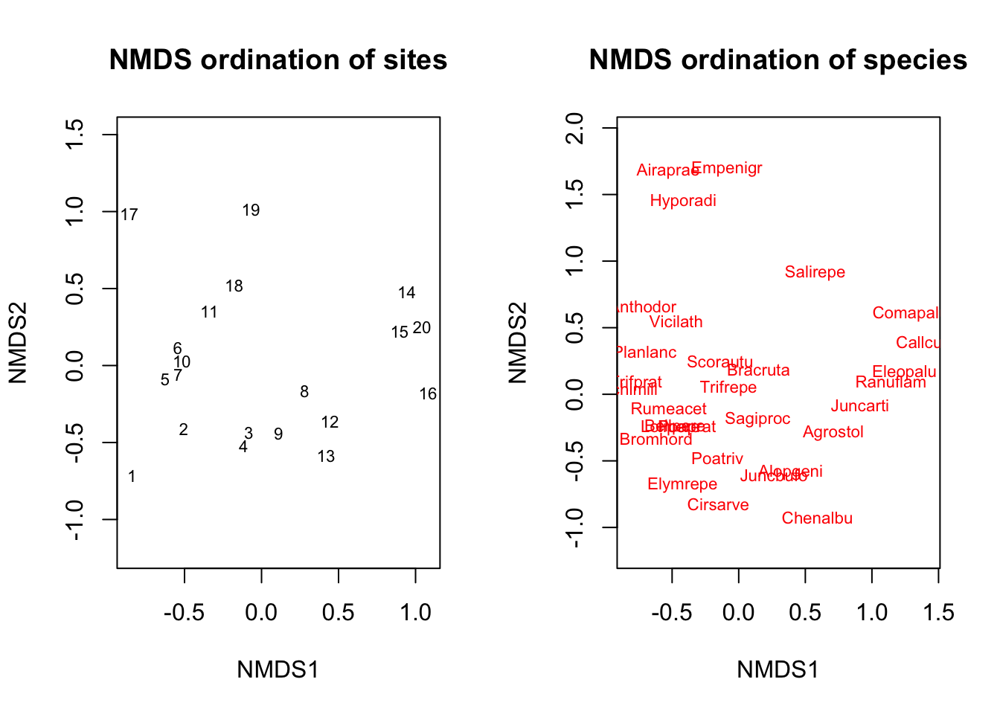
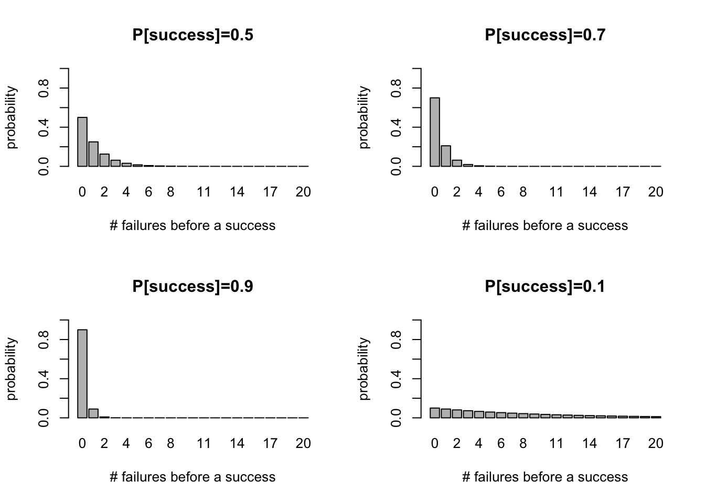
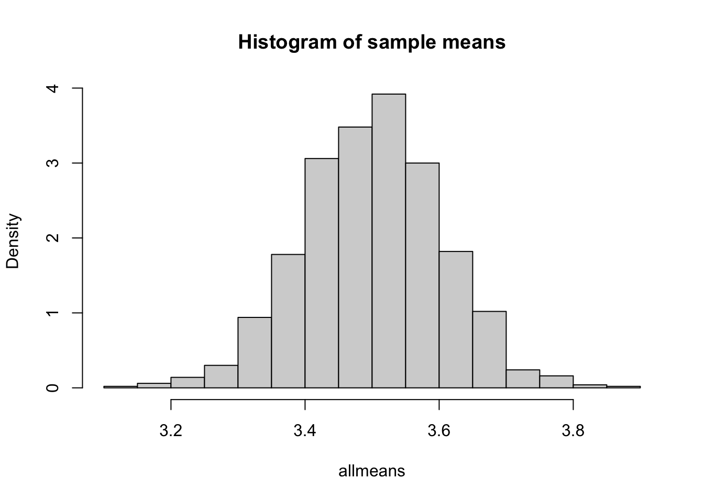
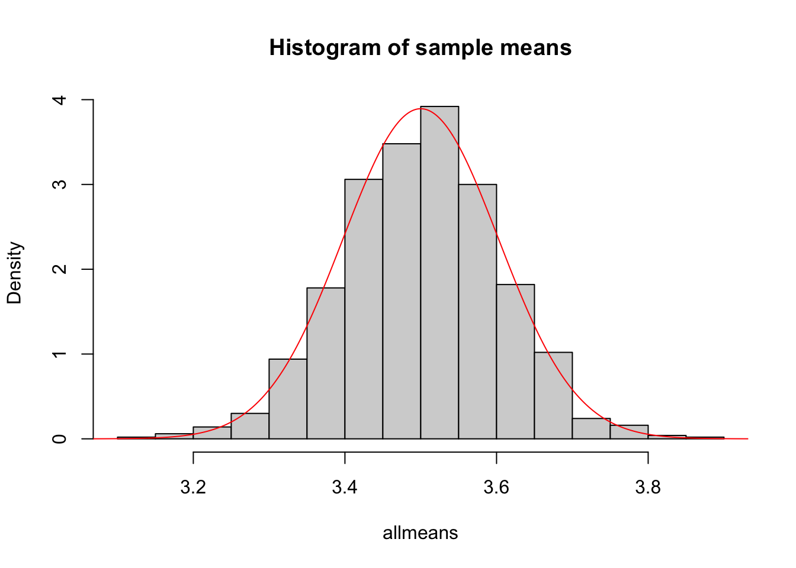

Chapter 5 Probability Catch-up
5.1 Discrete distributions
We’ll start by reviewing a few commonly used discrete probability distributions.
There is a whole world of R functions we can use to sample random values from probability distributions or obtain probabilities from them. Generally, each of these functions is referenced with an abbreviation (pois for Poisson, geom for Geometric, binom for the Binomial, etc.) preceded by the type of function we want, referenced by a letter:
r… for simulating from a distribution of interestd… for obtaining the probability mass function \(P[X=x]\) (or probability density function for continuous random variables)p… for obtaining the cumulative distribution function, which is just a fancy way of saying \(P[X \leq q]\) for any value of \(q\).q… for the quantile function of a distribution of interest
For example, in the case of the Poisson distribution:
rpois(n, lambda)generates \(n\) random samples from the Poisson distribution with ratelambdadpois(x, lambda)allow us to calculate the Poisson probability mass function (PMF) \(P[X=x] = \lambda^x e^{-\lambda}/x!\) for a given value of \(x\) (an integer) andlambda(\(\lambda\)) - the rate of the Poisson process.ppois(q,lambda)allow us to calculate the Poisson cumulative distribution function \(P[X \leq q]\) for any value of \(q\) (an integer) and ratelambda(\(\lambda\)).qpois(p, lambda)provides the \(p\)th quantile of the Poisson PMF with ratelambda.
The internet and the R help functions (e.g. ?rpois) are your friends here. Use them whenever you’re interested in understanding how to use these functions, and what types of inputs they require.
5.1.1 Poisson distribution
Let’s take a stab at answering some discrete probability questions using the Poisson distribution and the above mentioned functions.
Recall that the Poisson distribution is used to model the number of events (or objects) that occur over a given period of time (or space), if these occur with a constant mean rate and independently of each other. It is generally applied to systems with a large number of possible events, each of which is rare.
Some (simplified) examples include:
Number of rain droplets falling on a house roof
Number of meteorites hitting a planet over a given period of time
Number of buses arriving at a station over a given period of time
Number of trees in a given area of land
Number of fish in a given volume of water
Here are plots of Poisson PMFs with different mean rates \(\lambda\):

Exercise: Let’s assume the number of trees on any squared kilometer of land follows a Poisson distribution. If trees occur at a mean rate of 5 per squared kilometer, what is the probability that 3 or less trees will occur on a given squared kilometer?
A nice property of the Poisson distribution is that if its rate \(\lambda\) is given over a particular unit of time (or space), but our period or area of study is larger or smaller than that unit, we can simply multiply that rate by the extent of the corresponding period or area to get the rate of the Poisson distribution for that period or area:
\[P[ x\ events\ in\ interval\ of\ length\ 1] = \lambda^x e^{-\lambda}/x!\]
\[P[ x\ events\ in\ interval\ of\ length\ t] = (\lambda t)^x e^{-\lambda t}/x!\]
Exercise: Given the same per-unit rate as the previous exercise, what is the probability that more than 10 trees will occur on area that is 3 squared kilometers large?
5.1.2 Geometric distribution
Another interesting distribution is the Geometric distribution. Recall that this distribution serves to model a sequence of trials, in which we are interested in computing the probability of a given number of failures, before we are succesful. The probability mass function depends on a single parameter, the per-trial probability of success, p. The probability I fail k times before I succeed is:
\[P[X = k] = (1-p)^k p \]
Here are plots of Geometric PMFs with different probabilities of success:

While the probability mass function always decreases for increasing number of failures, the rate of this decrease strongly depends on the probability of success in eahc trial. For example, if I have a loaded coin that has 90% of probability of giving heads, then I won’t have to wait for long until I get heads (success). Looking at the bottom left panel in the figures above, I can see that it’s actually most likely I will get heads on the first try.
Exercise: I have a loaded coin that I use to trick people. Unlike normal coins, this coin results in heads 3 out of 4 times, on average. I start tossing the coin, and wonder: what is the probability I get at least 2 tails before I get a head? And what is the probability I get exactly 2 tails before I get a head? Use the geometric cumulative distribution function pgeom and the probability mass function dgeom, respectively, to answer these questions.
5.1.3 Sampling from arbitrary distributions
What if we want to create our own probability distribution? In R, we can, using the funciton sample(). Here’s an example of a probability distribution I just decided to create, which serves to model a six-sided dice roll, where each side has equal probability (1/6) of being obtained:
sides=c(1,2,3,4,5,6) # vector of elements
probabilities=c(1/6,1/6,1/6,1/6,1/6,1/6) # vector of probabilities for each element
sample(sides,10,prob=probabilities,replace=TRUE) # roll a dice 10 times## [1] 6 2 5 5 3 6 5 5 2 3The option replace=TRUE ensures we can sample with replacement from the sides vector. Because each element has equal probability of occurring, the above is also calle a discrete uniform distribution. This is not necessary, however. Here’s an example in which we roll a loaded dice where the side 6 is biased to appear more frequently than the others:
sides=c(1,2,3,4,5,6) # vector of elements
weights=c(1,1,1,1,1,4) # vector of unnormalized weights for each element, with the element '6' being more favored than the others
probabilities = weights / sum(weights) # to create a probability vector, we ensure all the weights sum up to 1
sample(sides,10,prob=probabilities,replace=TRUE) # roll a loaded dice 10 times## [1] 5 6 5 6 3 6 6 6 6 6Let’s put this function into practice.
Exercise: You’re a dog breeder who’s been given the following table of litter size frequencies, obtained from 10,000 previously recorded litter sizes:
library(knitr)
dogprobs <- round(c(dpois(seq(1,9),4)),2)
dogprobs <- c(dogprobs, 1-sum(dogprobs))
littertab <- cbind(c(1,2,3,4,5,6,7,8,9,10),dogprobs)
colnames(littertab) <- c("litter_size","frequency")
kable(littertab,caption="Dog litter size frequencies")| litter_size | frequency |
|---|---|
| 1 | 0.07 |
| 2 | 0.15 |
| 3 | 0.20 |
| 4 | 0.20 |
| 5 | 0.16 |
| 6 | 0.10 |
| 7 | 0.06 |
| 8 | 0.03 |
| 9 | 0.01 |
| 10 | 0.02 |
In this exercise, we’ll assume that the probability of a litter size of 11 or higher is effectively zero. Simulate 100 new litter sizes using the above table as an approximation to the true distribution of litter sizes, by using the recorded frequencies as probabilities.
Compute the sample mean, sample variance and create a histogram (with the function
hist()) of the simulated litter sizes.Estimate the probability mass function of your simulated samples from part (a), using the help of the function
table(). This should be very similar to the original probabilities that you simulated from.
5.2 The Normal distribution and the Central Limit Theorem
The Central Limit Theorem states that if \(X_1, X_2, ..., X_m\) are random samples from a distribution (any distribution) with mean \(\mu\) and finite variance \(\sigma^2\), and the sample mean is \(\bar{X}\), then, as m grows large, \(\bar{X}\) converges in distribution to a Normal distribution with mean \(\mu\) and standard deviation \(\sqrt{\sigma^2 /m}\).
In other words, for large values of m (large sample sizes), we can treat the average of our sample as being drawn from \(N(\mu,\sigma^2/m)\).
How can we verify this to be true? Well, one way to do this is to pretend (simulate) we have many sample sets, each composed of a large number of samples, compute their sample mean, and look at the histogram over all the sample means. If the CLT holds, that histogram should look very similar to a Normal distribution. Let’s try that here!
We’ll begin with a binomial distribution as our initial “sampling” distribution. We can, for example, draw \(m=100\) values from a binomial distribution with parameters \([p=0.7,n=5]\), and then compute their mean:
m <- 100 # sample size
p <- 0.7 # binomial success parameter
n <- 5 # binomial size parameter
samp1 <- rbinom(m,n,p) # simulation
mean1 <- mean(samp1) # sample averageThe CLT theorem is a statement about multiple means from multiple samples, so let’s repeat the above exercise 1,000 times:
allmeans <- sapply(seq(1,1000), function(i){mean(rbinom(m,n,p))})
hist(allmeans,freq=FALSE,main="Histogram of sample means")
The CLT states that this distribution should be very close to a Normal distribution with mean \(\mu = np = 5*0.7 = 3.5\) and \(\sigma^2 = (np(1-p))/m = 5*0.7*0.3/100 = 0.0105\). Let’s verify that:
hist(allmeans,freq=FALSE,main="Histogram of sample means") # Histogram of sample means
mu <- n*p # mean of Normal distribution under the CLT
var <- n*p*(1-p)/m # variance of Normal distribution under the CLT
sd <- sqrt(var) # standard deviation of Normal distribution under the CLT
curve(dnorm(x,mean=mu,sd=sd),from=-5,to=5,n=5000,add=TRUE,col="red") # Normal distribution
Exercise: Repeat the exercise above but instead of a binomial distribution, use a Poisson distribution with parameter \(\lambda=5\) (considering what the mean and variance of the corresponding Normal distribution should be).
Exercise: Repeat the exercise above but instead of a binomial distribution, use a Geometric distribution with parameter \(p=0.8\) (considering what the mean and variance of the corresponding Normal distribution should be).
Note: if you know a priori that \(X_1, X_2, ..., X_m\) are independent draws from a \(Normal(\mu,\sigma^2)\) distribution, then you don’t need to invoke the CLT: \(\bar{X}\) will be normally distributed with mean \(\mu\) and standard deviation \(\sqrt{\sigma^2 /m}\), even for low values of \(m\)!
5.3 The exponential distribution
Previously, we simulated the quantity of buses that would randomly arrive at a station over a particular period of time (an hour), given that the rate of this process is constant. For this, we used the Poisson distribution with parameter \(\lambda\) equal to this rate. Using the same rate assumption, we can also model the waiting time until the next bus arrives, using the exponential distribution. Take a look at the help page for ?rexp.
Exercise: Buses arrive at a station at an average rate of 3 per hour. Using the rexp function, simulate 1,000 waiting times (in hours) of this random process, assuming the waiting time follows an exponential distribution. Create a histogram of these waiting times. Then, calculate their sample mean and compare it to the expected value of an exponential distribution with rate 3.
Exercise: I’ve arrived at a station. Assuming the same rate as above, use the pexp function to obtain the probability that I will have to wait less than 15 minutes till the next bus arrives.
Exercise: Assuming the same rate as above, use the pexp function to obtain the probability that I will have to wait more than 30 minutes till the next bus arrives.
Exercise: Assuming the same rate as above, use the pexp function to obtain the probability that I will have to wait between 33 and 48 minutes for the next bus to arrive.